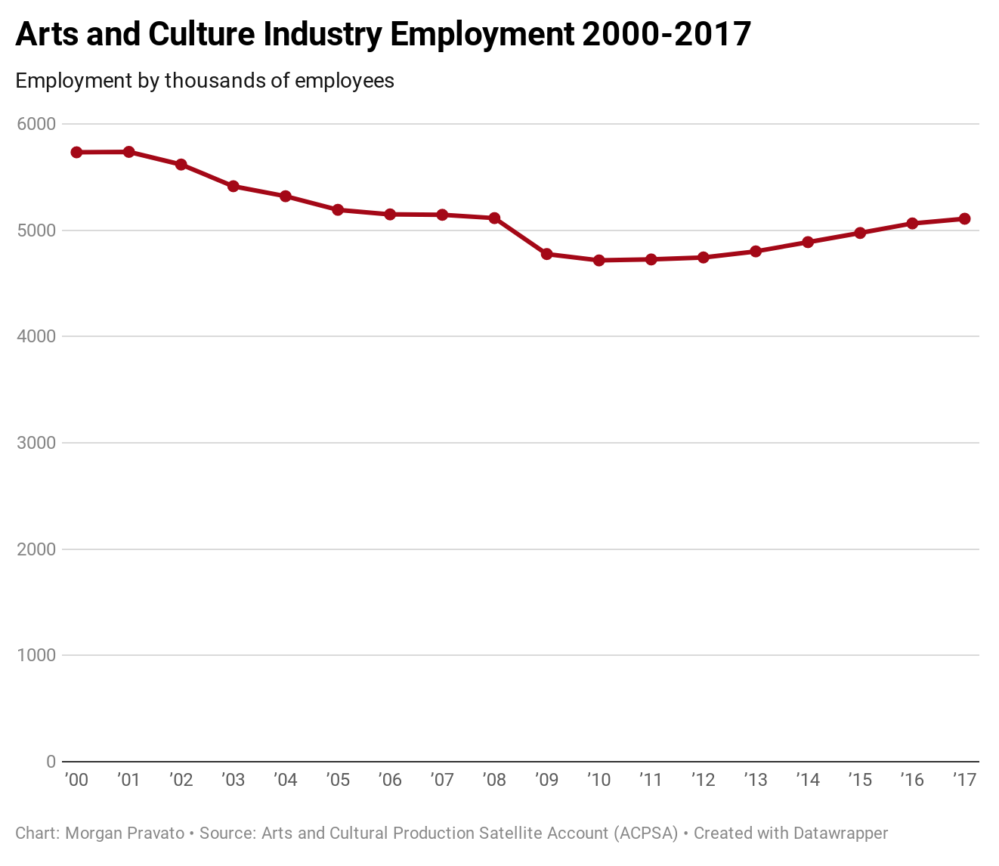
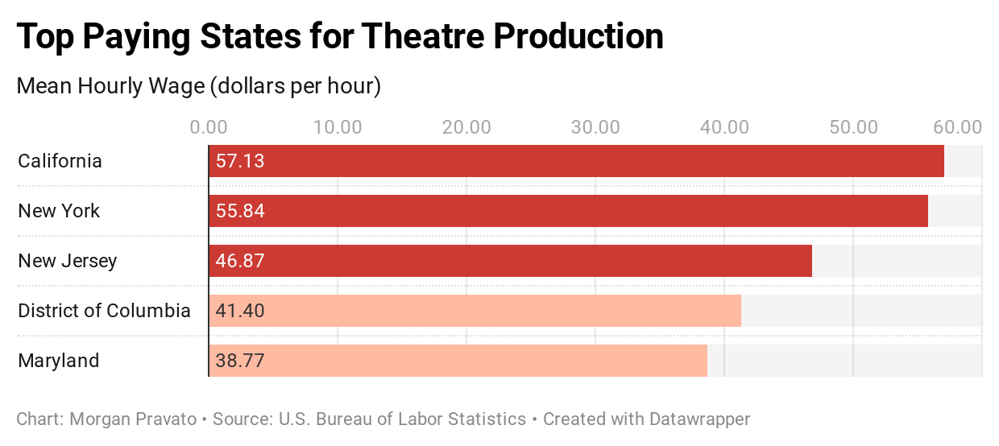
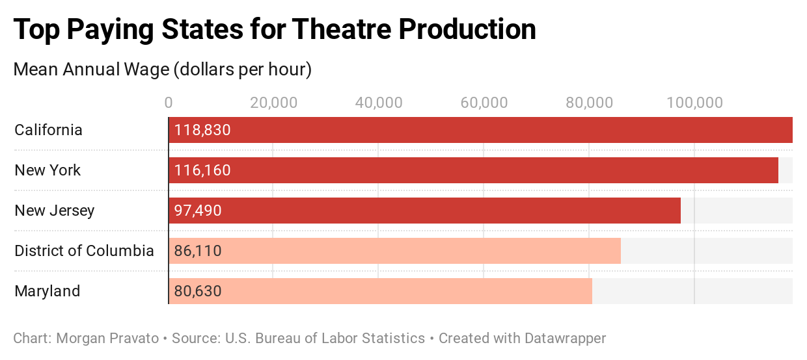

April 28, 2020
Senior TDPS students Jemma Lehner and Lucy Taylor walking in front of the Clarice Smith Performing Arts Center (Evan Kramer/The Diamondback)
Hunched over the lighting board, Jemma Lehner navigates through its small buttons and knobs with ease. She rarely looks up from the rows, only to occasionally squint through her glasses at a small screen. After nearly 70 hours of training to be a light board operator, she says she relies on muscle memory to fulfill her duties for the University of Maryland’s production of “A Doll House.”
“I was in the lighting booth every day for two weeks. I was just staring at that screen, listening to [the lighting designer,] and pressing the buttons he wanted,” said Lehner, a senior business management and dance major, after the evening’s performance.
All undergraduates in the School of Theatre, Dance, and Performance Studies are familiar with TDPS479: Production Practicum, a course that many have recently called “unfair.” Dance majors are required to complete it twice and theatre majors are required to take it four times in order to graduate. It is intended to provide real world experiences by allowing students to work in a production shop and as a part of the backstage crew for a specific production. For one to three credits, students wash costumes, help build sets or assist with light and sound board operation among other responsibilities.
(Evan Kramer/TheDiamondback)
Lehner and fellow crew member Lucy Taylor, a senior theatre major, said that they recognized the value of their work. However, they considered the expectation for fulltime students to work roughly 130 hours over three weeks to be unreasonable, especially for self-supporting undergraduates. The pair contacted The Diamondback in February in order to voice their concerns about the course structure, share their experiences and provoke change for future students.
After an article written by Editor in Chief Leah Brennan was published, Director Leigh Wilson Smiley enacted a four-member task force to work on improving the student experience. TDPS also organized an open-forum style meeting for students to vocalize both the concerns and benefits they saw in the course.
According to The Diamondback, Smiley said that she was unaware of students’ issues before the article was published. She called the meeting and accompanying feedback “fabulous.”
“[They disguise it like] we’re getting all this experience, and to me, it just doesn’t feel like that,” said Taylor to The Diamondback in Brennan’s article.
While Lehner and Taylor adamantly pushed for changes to TDPS479, many students were passionately in favor of maintaining its structure.
“You are gaining knowledge from working on crew if you open yourself up to it…TDPS is building your toolkit for having a career in the performing arts,” said senior theatre major Maria De Barros.
According to the course outline, the practicum is intended to help students develop marketable skills before graduation. The Arts and Culture Production Satellite Account (ACPSA) reported arts and culture industry growth over the last decade. Artists are thriving but are frequently expected to complete basic crew-related tasks for a show.
According to the U.S. Bureau of Labor Statistics, 1.2 million artists have a separate primary job for additional reliable income. TDPS479 helps prepare students for those positions, which are some of the best paid employment opportunities within the arts and culture sector. The average salary in the area surrounding the University is even one of the highest in the country.
 Agyeiwaa Asante, a 2018 University of Maryland theatre graduate, expressed support for De Barros on Facebook. “Post-graduation, almost every job/gig I’ve gotten can be directly tracked to a 479 I did…These are not my dream professions, but they kept me employed in this world,” she wrote.
While Smiley and other students found the verbal and online conversation to be productive, Lehner said that many of her peers attacked her. Taylor said she was interrogated to the point of tears.
In order to gauge upset in TDPS over the graduation requirement, dance and theatre majors were spoken to for weeks after the open forum.
The majority reported favorable experiences working in production shops. The average student worked for 35 hours over the course of a semester. Their shifts were scheduled to fit their preexisting course schedules and coordinated with the shop heads.
Students reported that working backstage was a very different experience.
The crew is emailed their assigned show’s schedule before the semester began. The hours each member is required to be present and actively working varies by position, but they receive the same amount of credit whether they complete 80 or 120 hours. The School allows for students to submit conflicts before signing a contract, but they struggle to get excused for extenuating circumstances or work conflicts.
“I would just like a little bit of transparency,” said Ira “Atlas” Hill, a senior dance and informational science major. He fulfilled his final TDPS479 requirement on the “Noises Off” wardrobe crew by doing laundry, helping with minor sewing work and steaming costumes during his normal five-hour day. At most, students had to plan to spend 14 hours of one day in the Clarice Smith Performing Arts Center.
While the School was planning to begin enacting changes for the crews assigned to shows at the end of April, the University’s switch to remote learning is delaying these plans. Bobby Hunter, the TDPS production and events coordinator, said that the School was discussing having two crews per show in order to provide students with more flexibility. All students enrolled in TDPS479 this semester will receive a Pass Grade (P) regardless of the number of work hours they completed. Students will have to wait until Fall 2020 to experience the changes.